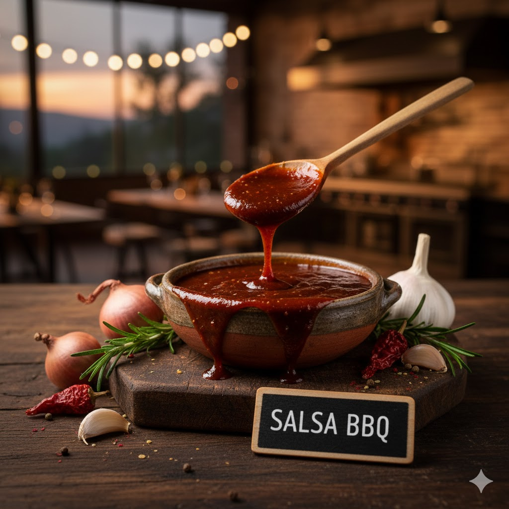
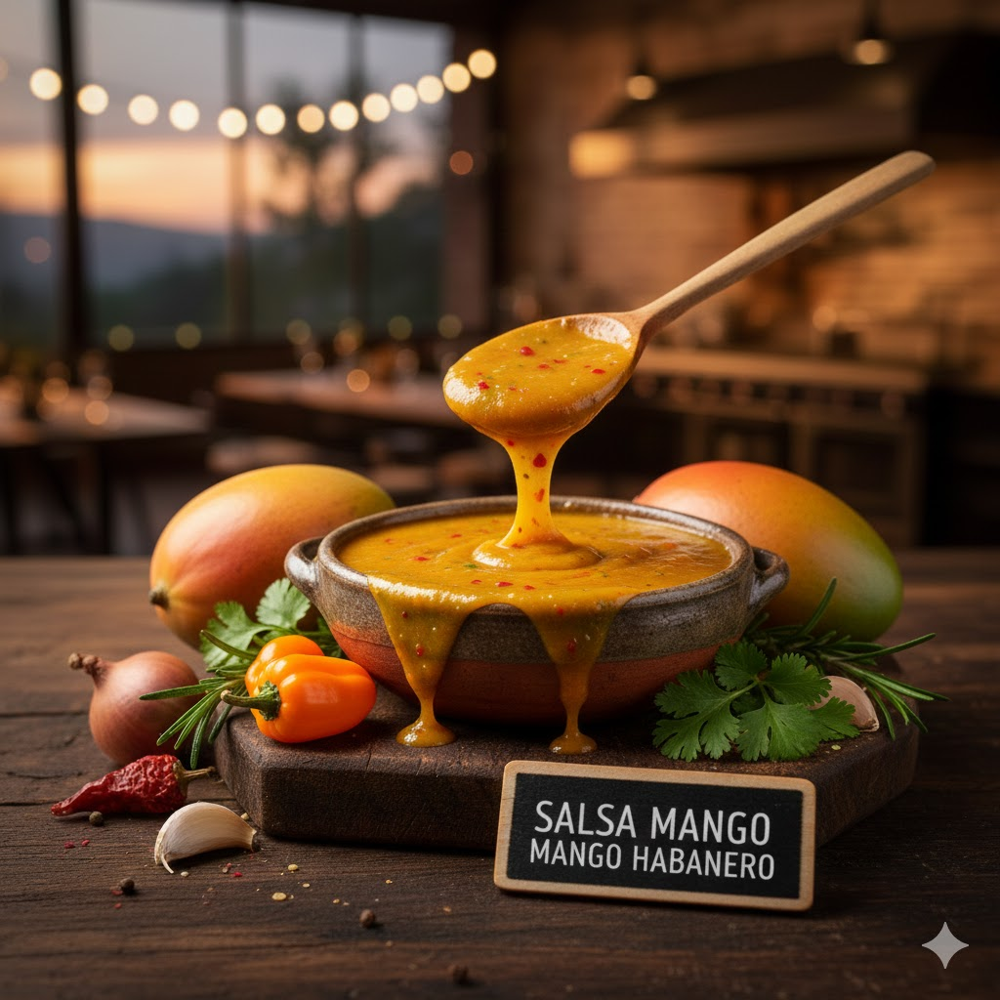
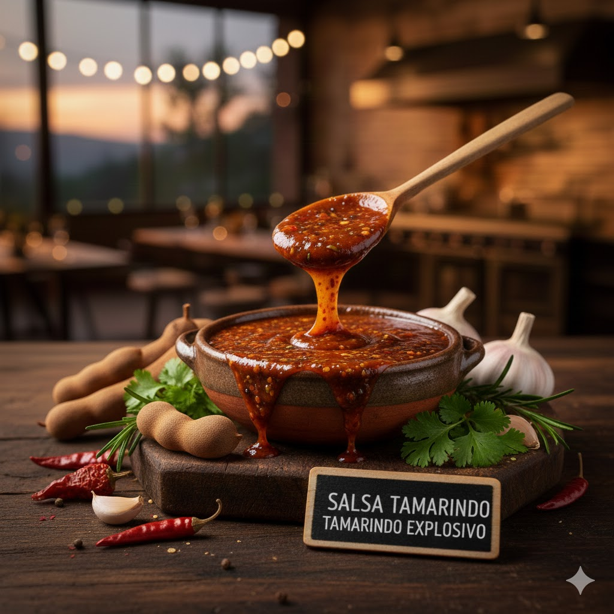
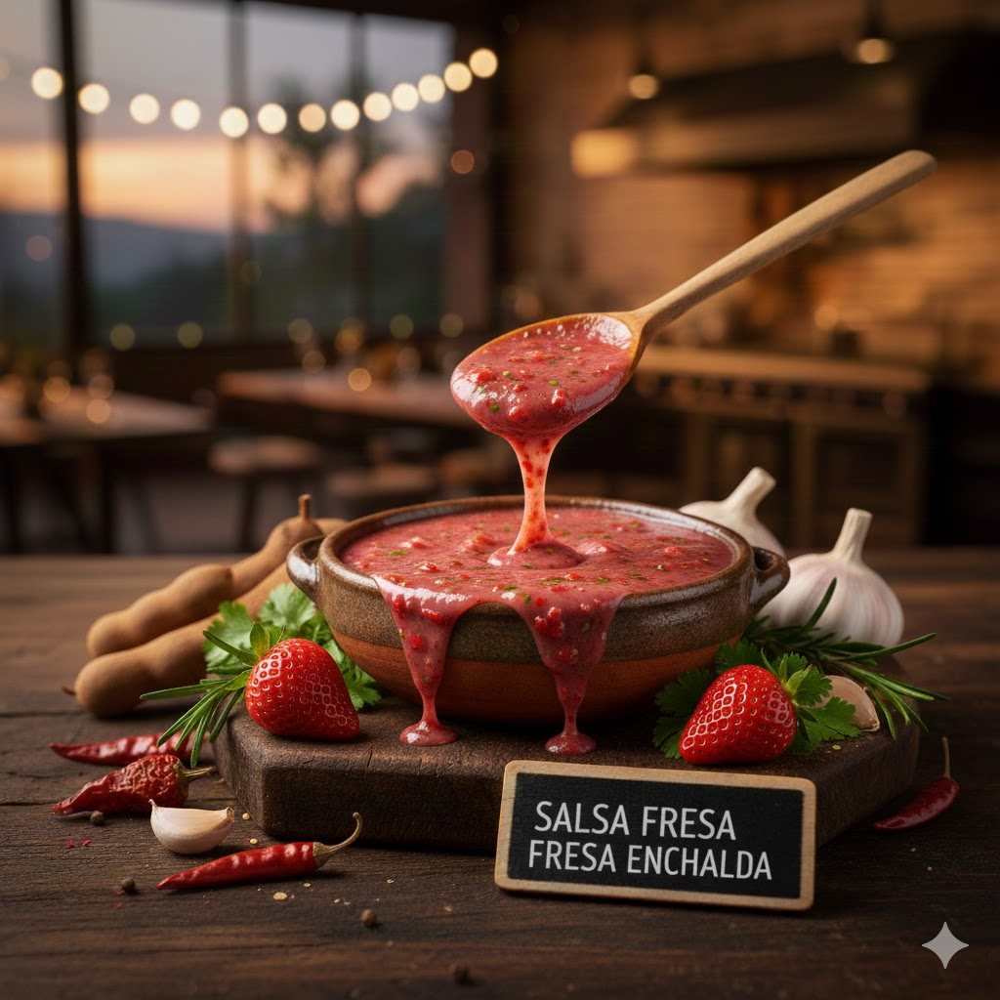
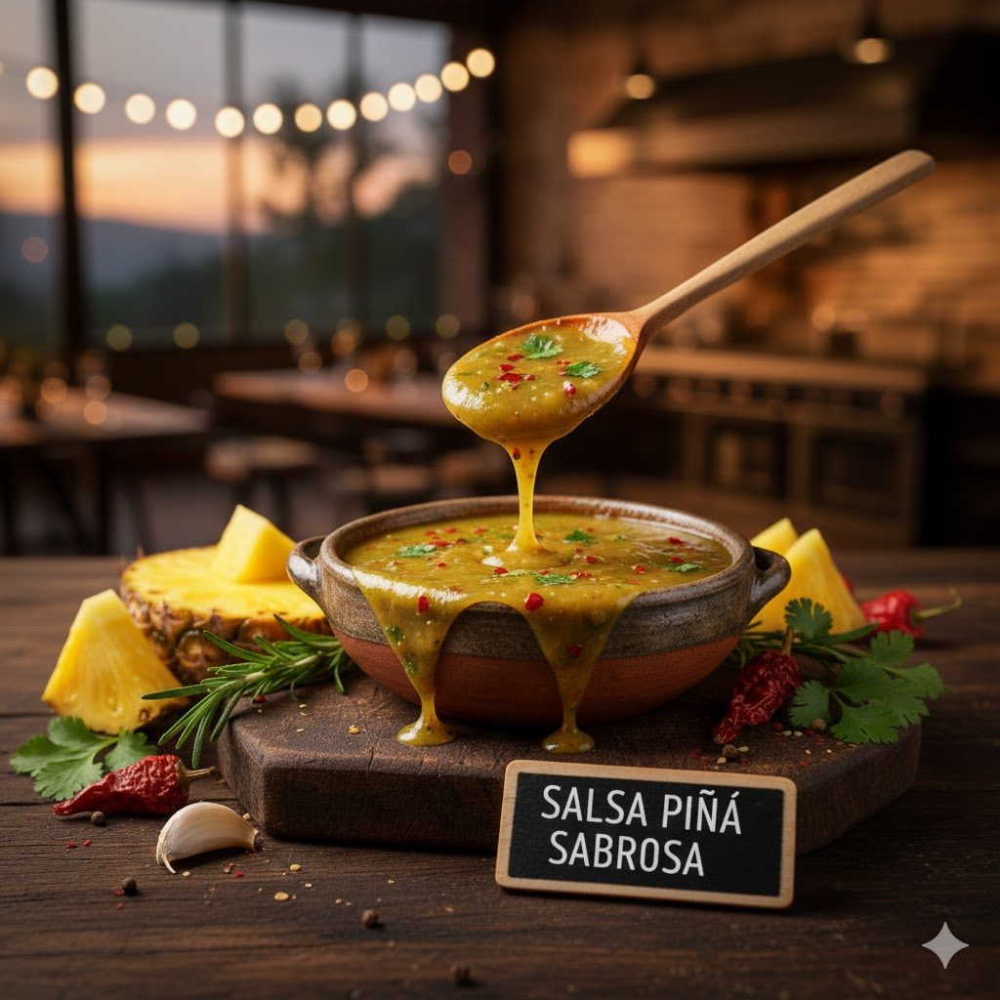
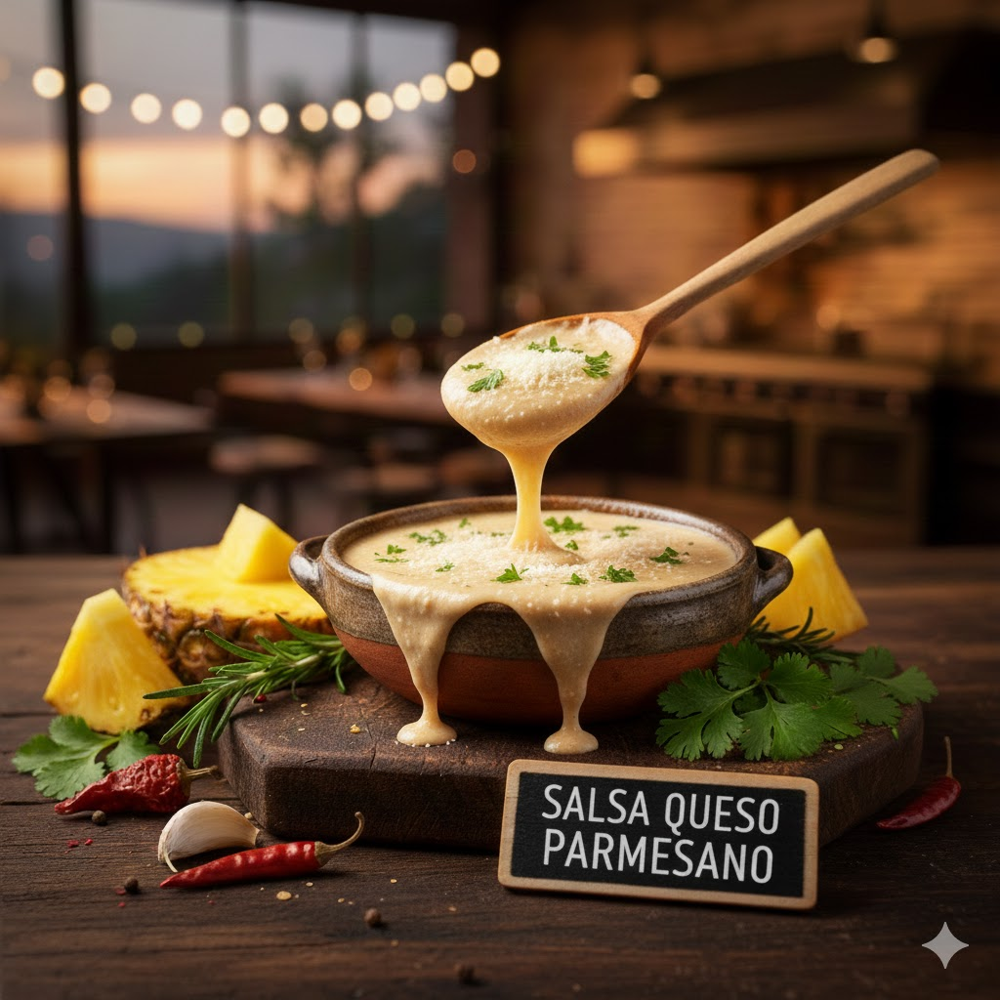
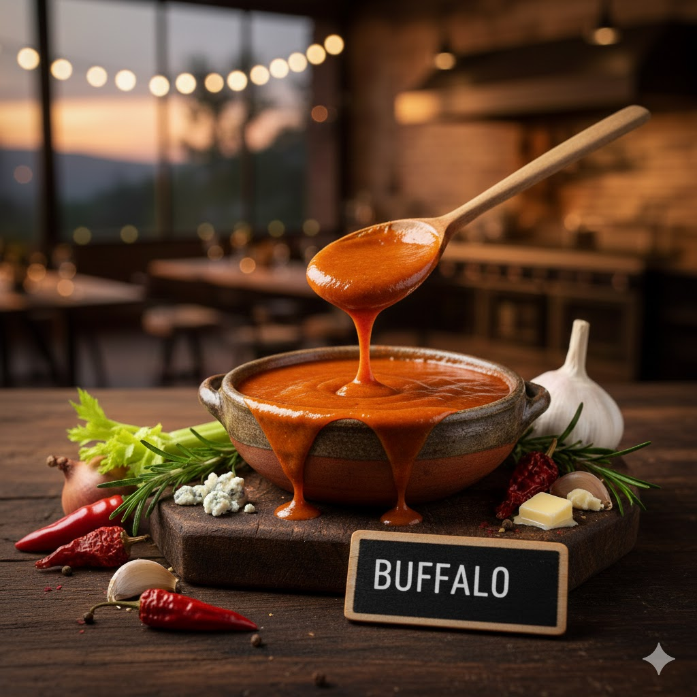
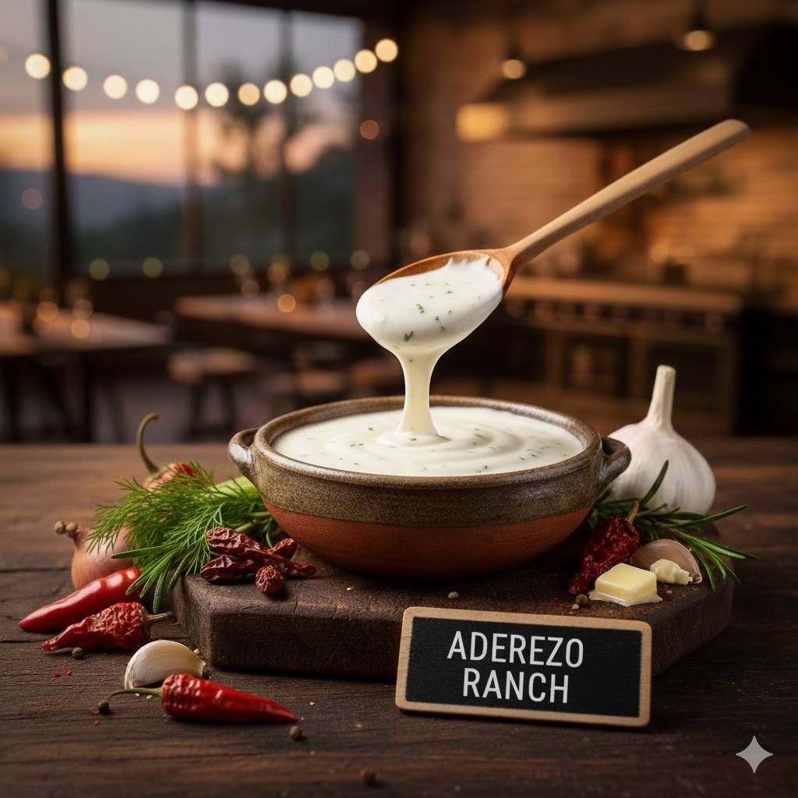
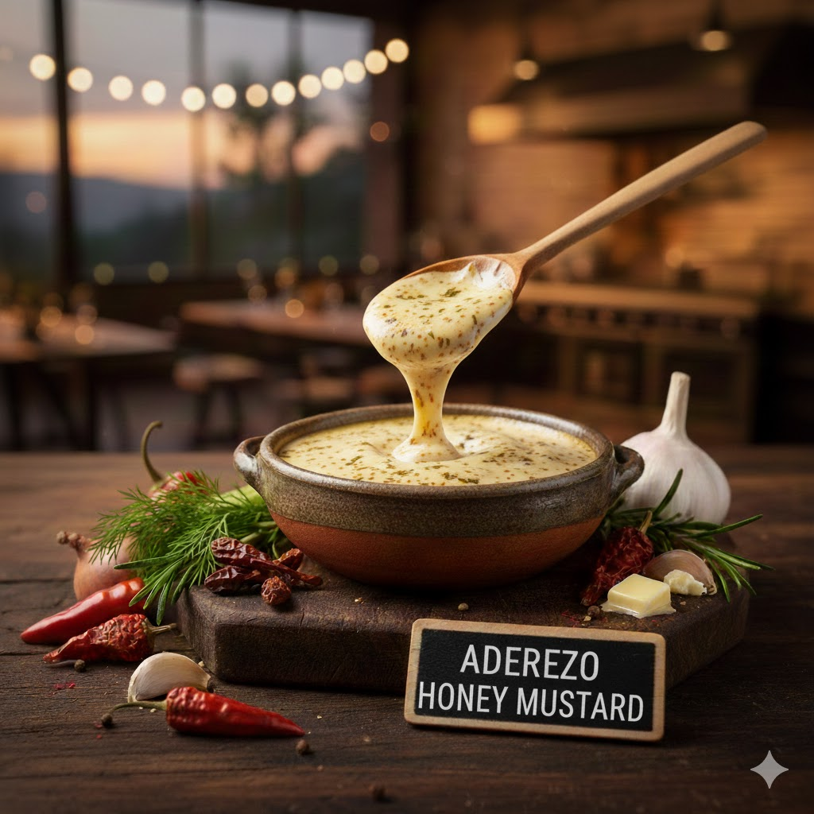
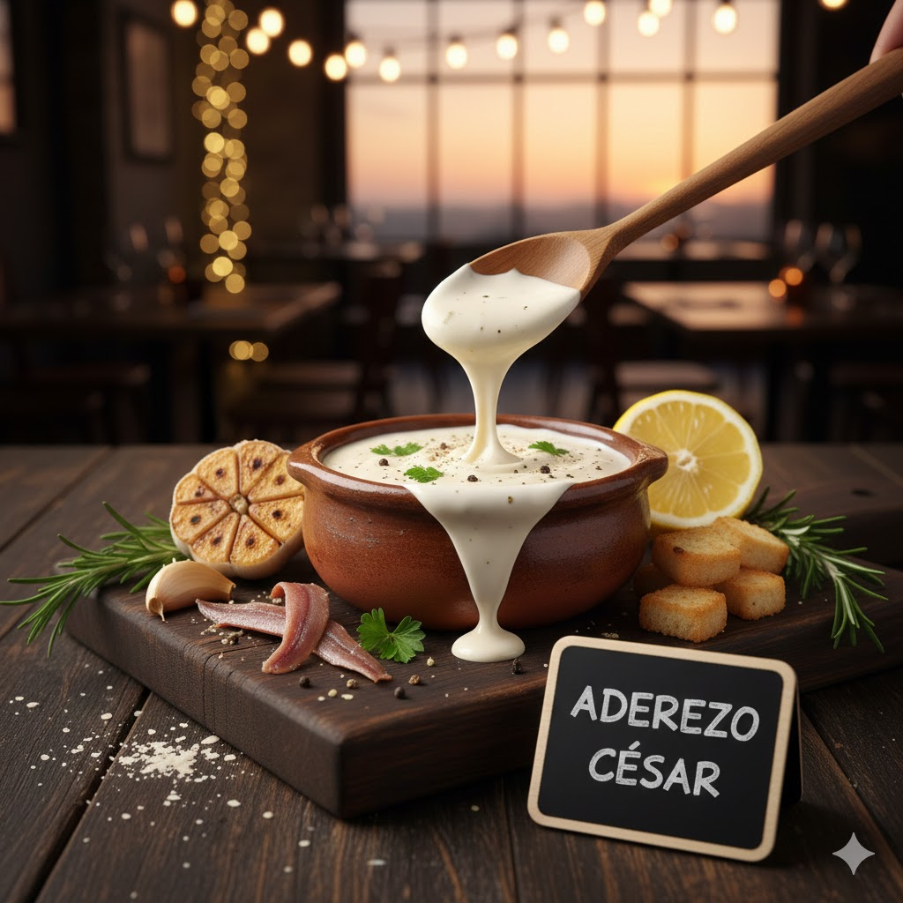

SALSA BBQ
Clásica y llena de sabor. Una mezcla perfecta de dulzor, acidez y notas ahumadas que realzan cualquier hamburguesa o acompañamiento. Un toque tradicional que nunca falla.

SALSA MANGO HABANERO
Dulce y tropical al inicio, con un picante firme al final. Una combinación equilibrada que resalta cada bocado sin opacarlo.

SALSA TAMARINDO EXPLOSIVO
Dulce y picante en un solo golpe de sabor. Perfecta para darle un toque atrevido a tus platillos.

SALSA FRESA ENCHILADA
Fresca, frutal y con un picor equilibrado. La mezcla perfecta entre dulce y enchilado.

SALSA PIÑA SABROSA
Tropical y jugosa, con un ligero picante que realza cualquier bocado.

SALSA QUESO PARMESANO
Cremosa y con un aroma intenso, mezcla el sabor clásico del parmesano con un toque salado que eleva cualquier hamburguesa o acompañamiento.

SALSA BUFFALO
Acidita y picante en el punto exacto, con ese sabor clásico que combina mantequilla y especias. Perfecta para quienes buscan un golpe de sabor sin perder el equilibrio.

SALSA EXTREME
Una combinación intensa para los amantes de lo realmente picante. Sabor fuerte, directo y sin miedo.

ADEREZO RANCH
Suave, fresco y versátil. Con notas de hierbas y un toque cremoso, es el favorito para acompañar papas, alitas y prácticamente cualquier cosa.
ADEREZO BLUE CHEESE
Intenso, cremoso y con carácter. Elaborado con queso azul, su sabor profundo realza cualquier bocado y es perfecto para quienes disfrutan de sabores fuertes y sofisticados.

ADEREZO HONEY MUSTARD
La mezcla ideal entre dulce y picante. Su combinación de miel y mostaza crea un sabor suave pero vibrante, ideal para acompañar hamburguesas, papas y snacks.

ADEREZO CESAR
Clásico y cremoso, con un toque de ajo y queso que aporta un sabor elegante y equilibrado. Perfecto para realzar ensaladas y acompañar tus platillos favoritos.